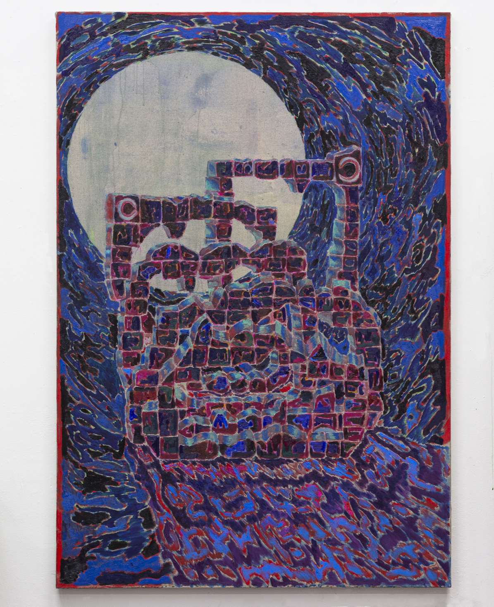
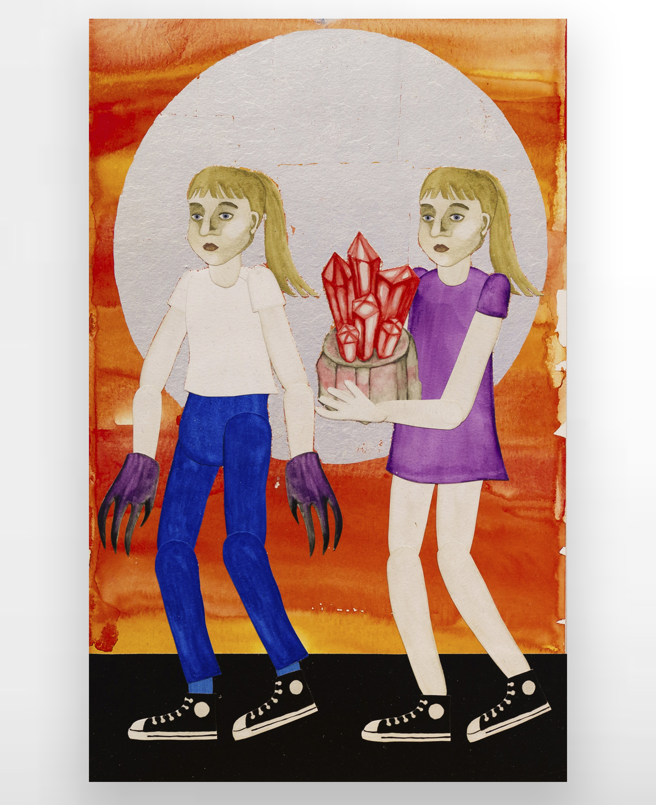

Anna Sofie Mathiasen & Espen Kvålsvoll
TOAST
De 12 måneder á 30 dage var gået, og i nat begynder de 5 festdage
*. I tågen var de døvstummestjerner blevet usynlige, og det føltes som umuligt ikke at snuble. SLAM. Der lyste du tågen op med et smukt ansigt stående på en drage, med horn på dit hoved, med to slanger viklet omkring dig. En slange var viklet omkring hver af dine arme, og over dit hoved var en drage, og en anden drage under dine fødder, hver af disse drager havde syv hoveder. På himlen svingninger månen fra ingenting ved nymåne til en stor skive ved fuldmåne. Her starter festen og vi spiser og skåler.
Jeg har læst at hvis et billede af månen placeres på et bord, ville dette billede være mere virkeligt end månen på himlen. Forklaring er, at den sansende måne er en ringere materialiseret udgave af den virkelige formløse Måne. Et sådant billede skaber nemlig en direkte kontakt til månen opfattet som en kosmisk energiform.
Fuldmånen er et centralt element i hver af Anna Sofie Mathiasen og Espen Kvålsvolls billeder, hvor det i begge tilfælde er en form for lyskilde. I
Carriers reflekterer bladsølvet i månen det udefrakommende lys, mens det dramatiske lysspil i
Beaming, udspiller sig fra månen, der reflektere lyset hvilket forårsager at følelser og stemninger vokser.
-Thomas Bremerstent
*Et Ægyptisk år; en tidlig form for sol-kalender bestående af 12 måneder á 30 dage plus 5 festdage. Altså 265 dage i alt, den eneste simple sol-kalender der er mulig.
Anna Sofie Mathiasen (b. 1995, Copenhagen) lives and works in Oslo. She is currently studying at Oslo National Academy of the Arts / Academy of Fine Art and will complete her MFA in 2020. Recent exhibitions include Kunstnernes Hus (Oslo), RAM Galleri (Oslo) and Sol (Nexø, DK).
Espen Kvålsvoll (b. 1992, Trondheim) lives and works in Oslo. He completed his MFA at Oslo National Academy of the Arts / Academy of Fine Art in 2019. Previous exhibitions include LNM (Oslo) and NoPlace (Oslo).

Beaming
Espen Kvålsvoll
2020
Rabbitglue, pigment, gouache and oil on linen.
175x120cm

Carriers
Anna Sofie Mathiasen
2020
Wallpaper, silver leaf, mounted on poplar veneer